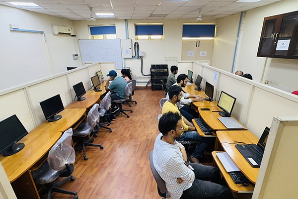

CASPAM - Bahauddin Zakariya University, Multan
Our state-of-the-art computer lab provides excellent resources for students to engage with modern, high-impact domains. The lab is equipped with the latest hardware and software to support academic activities and research work.
Facilities Available:- Desktop computers with latest specifications
- Mathematical software (MATLAB, Mathematica, SPSS)
- High-speed internet access
- Machine Learning and Deep Learning environments
- Quantitative Finance software
- Printers and scanning facilities
- Air-conditioned environment

We provide a strong research culture with expert supervision and resources for innovation. Our research facilities are designed to support advanced mathematical research and interdisciplinary studies.
Research Resources:- Research workstations with high performance computing
- Access to academic journals and e-resources
- Online library databases (IEEE, ACM, Springer)
- Collaborative spaces for research groups
- Specialized hardware for computational mathematics
- Research guidance from experienced faculty
